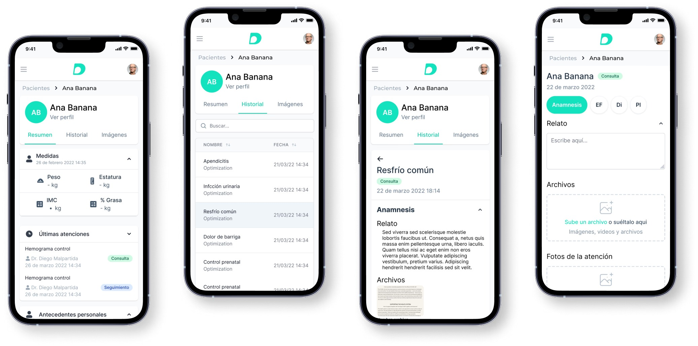
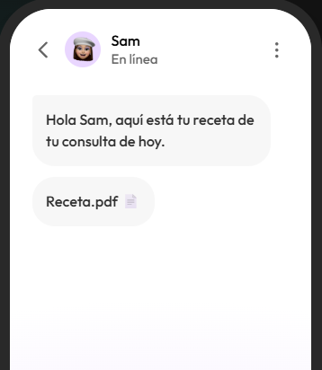

Pacientes
Encuentra a tus pacientes en segundos.
Toda la información está a un clic. Revisa la última atención, antecedentes y datos importantes sin perder tiempo buscando entre papeles.
Historia clínica electrónica
RENE Health es una historia clínica electrónica diseñada para ayudarte a pasar más tiempo con tus pacientes y menos con tu computadora.
Regístrate
Todo en un mismo lugar
Organiza tu consulta con herramientas diseñadas para el trabajo real de los profesionales de la salud.
Pacientes
Toda la información está a un clic. Revisa la última atención, antecedentes y datos importantes sin perder tiempo buscando entre papeles.

Recetas digitales
Crea recetas con los datos de tu consultorio y envíalas a tus pacientes por correo o WhatsApp después de la consulta.
Acceso donde estés
Accede y administra los registros médicos desde tu consultorio, tu casa o durante un viaje. RENE Health te mantiene conectado.

Tu forma de trabajar
Adapta la historia clínica a tu especialidad y atiende más rápido con plantillas que siguen tu manera de trabajar.
Más herramientas para tu consulta
Una plataforma pensada para que tu equipo trabaje con confianza y menos tareas repetitivas.
Protege la información con buenas prácticas de seguridad.
Atiende desde cualquier lugar y a cualquier hora.
Comparte recetas por correo o WhatsApp.
Agrega imágenes relevantes a cada consulta.
Organiza todos tus pacientes en un solo lugar.
Cuenta con ayuda para resolver tus dudas.
Recibe mejoras sin preocuparte por instalaciones.
Sube PDF, documentos y archivos de tu consulta.
Digitaliza tu consultorio y atiende a tus pacientes con la última tecnología.